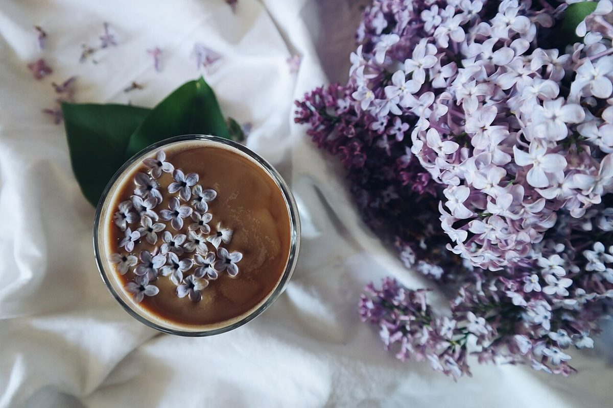

カフェ / 群馬県太田市飯塚町
7:373 chungdam
群馬県太田市飯塚町にあるカフェ「73 chungdam」のご案内ページです。営業時間やメニューなど、詳しいことは準備中。まずはInstagramをのぞいてみてください。
七と三の分け目で、ページをつくる

制作側の連想
「73」を、七対三と読んでみた
店名の由来は分かりません。制作側は「73」という数字から、割合の「七対三」を連想しました。そこでこのサイトは、すべてのページを縦の分け目で七:三に割る作りにしています。制作側の連想で、お店の理念・由来とは無関係です。
右の三割は、いつも脇役。注記や補足はこちらに置きます。
このサイトの七:三
いま分かっていること、まだ分からないこと
準備中7確認済み3
所在地・電話番号・Instagramが確認できていることの三割。営業時間・定休日・メニュー・価格・ご予約・駐車場は、七割ぶん準備中です。

七と三の写真
広く、そして細く
写真は太田市やお店のものではなく、国外または撮影地不明のフリー素材のイメージです。



ご案内
お店のこと(確認できたものだけ)
| 所在地 | 〒373-0817 群馬県太田市飯塚町186-1 |
|---|---|
| 電話 | 0276-52-8829 |
| 営業時間 | 準備中 |
| 定休日 | 準備中 |
| ご予約 | 準備中 |
| 駐車場 | 準備中 |
| SNS | Instagram @chungdam_73 |